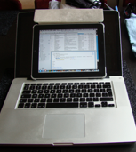

SB... I can get used to this!

Cali’ cruisin’
After last post I made the big move to California. I’m now officially living in Santa Barbara. I still don’t really get it but I think the thought is slowly starting to sediment in me. I left DK this wednesday after hanging out with my brother in Copenhagen for a couple of days.
Good to say a proper goodbye - it’s weird that we won’t hang out again before next year! My flight from Copenhagen was already at 7 in the morning so I got up early and took a cab. I was pretty nervous for my luggage. I packed the weekend before but 2x23kg+8kg is absolutely nothing when you need to carry most of your stuff. Hence both my suitcases and my hand luggage were weighing too much; the suitcases only by a kg or two each but my hand luggage weighed twice the allowed amount due to laptop, cords, documents, etc. Hence, I was really hoping that they didn’t want to weigh that and that they could ignore the slight overweight on the suitcases - and luckily they did. And from thereon everything went smooth. I flew over Frankfurt and San Francisco before landing in Santa Barbara after almost 24 ours on the road.
I slowly started the hunt for an apartment already back in Copenhagen, but without the possibility of quickly dropping by for open houses and set up quick appointments, it was tough doing it from Europe. After having arrived it has been easier to follow up quickly on adds which seems to be the key to get a nice place here. I’m working on it! Hopefully the next post will be from (well maybe about, as we need to get internet set up) our new home in Santa Barbara.
I’m working on it! Hopefully the next post will be from (well maybe about, as we need to get internet set up) our new home in Santa Barbara.
Saturday I moved from the hotel to a family home in the outskirts of Santa Barbara where I’m renting a room until I find something permanent. I share the house with a woman (the owner) her 2nd grade-aged daughter and two other renters. One of which live in a trailer in the driveway. It’s pretty cosy here, with a nice ‘californian’ atmosphere including a pet rabbit, surfboards, fig trees, organic food, and a relaxed way of living. They also have a bike that I can borrow/rent to make it easier to get around. Hence, yesterday I biked around the area, to campus, to the More Mesa ‘meadows’, and to the beach. There I had my first swim in the Pacific this year after sunbathing a bit with a seal. This place is really awesome. I can definitely get used to it. Mette and I definitely need to get some terrain-capable bikes.
There I had my first swim in the Pacific this year after sunbathing a bit with a seal. This place is really awesome. I can definitely get used to it. Mette and I definitely need to get some terrain-capable bikes.
After getting back in the afternoon I took a shower and jumped on the bike again to head out for one of California’s best treats: In N Out Burger. I spoiled myself with a No.2 with well done fries plus an animal style cheese burger. Damn that’s good. Fast-food burgers and fries like they are suppose to be. I think it is good that there is no In N Out Burger downtown as that c/would imply me eating there too often.

Today it’s holiday (labor day) so most shops are closed. I have therefore spent most of the day so far in front of the mac sorting out various things... oh and by the way: my mac decided a couple of weeks ago to black out on me. I think it is the screen-backlight-chip (if a such exist) that burned out. The computer is working except that the screen is no longer backlit meaning that I can only see what’s happening if I shine a very strong light on the screen... or use a secondary monitor - like for instance my iPad - I feel like an idiot ;) But at least it is working until I get set up at UCSB. Mac is great, but sometimes I really think they give their machines hick-ups at age 2-3 years on purpose - they know I cant go back now - bastards!

Well that’s it for this time. I hope the next post will be with pictures of our new home.
Till then,
Cheers
KBS
Monday, 3 September 2012